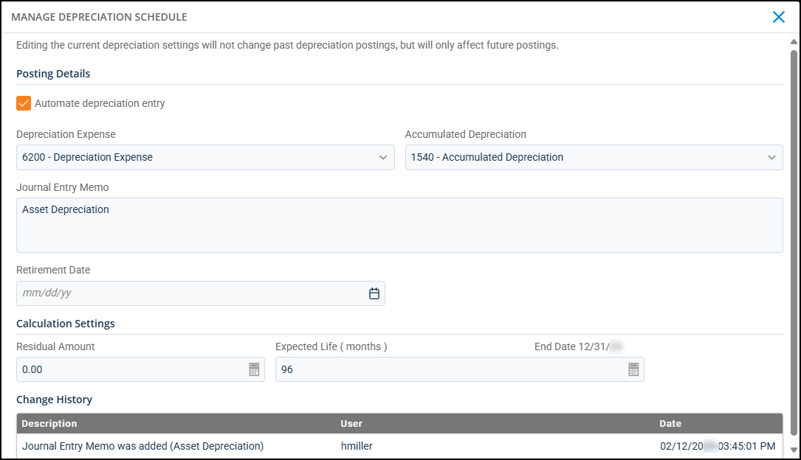

Source: https://rmxhelp.rentmanager.com/Topics/Express/CSH/Asset-Depreciation-Schedule-Manage.htm
Manage Depreciation Schedule (Pop-Up)
Businesses that expense the cost of assets purchased must track the depreciation of these assets over time. Depreciation is the consistent reduction in the value of an asset and the allocation of the asset's cost over a period of time. With Rent Manager, you can create and manage the depreciation schedules that track this decline in value.
Warning
Editing the current depreciation settings does not change past depreciation postings, but only affects future postings.
More Information
Only information related to the properties to which you have access displays. Your access to properties can be managed from your user account or on the property's details page. For more information, refer to Limit Access to a Property.
Related Privileges
| Group | Privilege | Column |
|---|---|---|
| Asset Management | Manage Assets | View, Edit |
| Depreciation Schedules | Edit |
For more information, refer to Control User Access.
To view an asset depreciation schedule, go to  arrow_forward Rental Info arrow_forward General arrow_forward Assets and select an asset from the list. Then, on the action bar to the right, click
arrow_forward Rental Info arrow_forward General arrow_forward Assets and select an asset from the list. Then, on the action bar to the right, click  arrow_forward Manage Schedule.
arrow_forward Manage Schedule.

Posting Details
The following fields display in this section:
| Field | Description |
|---|---|
|
Automate depreciation entry |
Depreciation posts automatically for this asset every month or year, depending on the Posting Frequency selected when the schedule was created. Automated journal entries for assets that depreciate monthly are posted on the last day of each month, and automated journal entries for assets that depreciate yearly are posted on the last day of the financial property's fiscal year. Related Preferences To set up automation schedules, you must have the appropriate automation enabled in system preferences. For more information, refer to Task Automation (System Preferences). |
|
Depreciation Expense |
The expense account that is used to track the decline in the asset's value over time. This account is debited in each journal entry created to increase the depreciation expense for the asset. This must be an expense-type general ledger (GL) account. |
|
Accumulated Depreciation |
The asset account that is used to track the asset's value over time. This account is credited in each journal entry created to decrease the value of the asset. This must be an asset-type GL account. |
|
Journal Entry Memo |
A memo or description to be used for each journal entry created in posting depreciation to track this asset's depreciation. |
|
Retirement Date |
The date on which the asset is taken out of service, thus ending the depreciation schedule for the asset. Automated depreciation postings stop as of the last posting date prior to the retirement date, and the asset no longer displays in the Post Depreciation page for manual postings. The Retirement Date might differ from the End Date if, for example, you sold an asset before the end of its expected life. |
Calculation Settings
The following fields display in this section:
| Field | Description |
|---|---|
|
Residual Amount |
The expected amount that the asset will be worth at the end of its depreciation. This is also known as the salvage amount. |
|
Expected Life |
The number of months or years that you expect the asset to be in service. This is the number of months or years during which the asset depreciates. More Information Depreciation schedules with a posting frequency of yearly can have quarter-year entries for the Expected Life. For example, enter 5.75 for an asset with an expected life of 5 years, 9 months. |
|
End Date |
The day on which the depreciation schedule ends, as determined by the asset's expected life. This field automatically populates based on the Expected Life entered above. |
Change History
If you or another user makes any changes to the depreciation schedule, those changes display in the Change History section of the pop-up. The following columns display in this section:
| Column | Description |
|---|---|
|
Description |
A short, system-generated note explaining the change made to the depreciation schedule (e.g., Journal Entry Memo was added, Retirement Date was added). |
|
User |
The user name of the user who made the change to the depreciation schedule. |
|
Date |
The date and time the change was made to the depreciation schedule. |